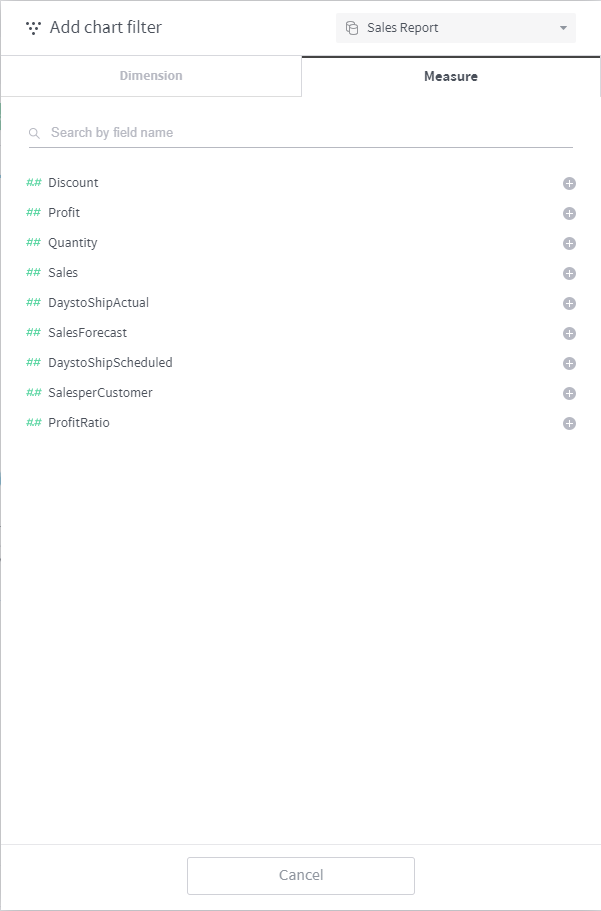

Chart filters¶
A chart filter defines what range of data is to be shown on the chart. This chapter describes how to set up and make use of chart filters.
Automatically included filters¶
The following column filters are included automatically when a chart is created:
Timestamp column filter: As a time-series data store, the Metatron engine necessarily uses a time filter.
Recommended filters: Column filters designated as “recommended filters” during the registration of the data source.
Dashboard filters set global: Filters applied to all charts registered in the dashboard.
Chart filter panel¶
The chart filter panel is located on the right-hand side of the chart home screen. On this panel, you can easily view and configure registered filters.

Filter number: Displays how many filters are registered for the chart.
Add/edit filter: Click on “+” at the top right to either add a new filter or open a popup for configuring an existing filter.
Columns applied with the filter: The top part of each individual filter displays which columns are applied with the filter.
Filter settings: Click the hamburger menu at the top right of an individual filter either to reset the filter or configure the details of the filter.
Chart filter dialog box¶
Click the button at the top of the chart filter panel or click the button in each filter area to open the chart filter dialog box. With this dialog box, you can add a new filter or configure an existing filter.
The chart filter dialog box is divided into the Dimension and Measure tabs as shown below:

Dimension filtering¶
From the connected data source, select a dimension on which to create a filter.

Value range: Select whether to filter the chart by a single or multiple data categories.
Single: Select one data category by which to filter the chart.
Multiple: Select multiple data categories by which to filter the chart.
Search: If there are too many elements in the column, this function allows you to limit the results only to those you wish to see.
Search by name: Search the column element list by name.
Element filtering: Filters elements either by matching element names with regular expressions or wildcards, or by applying a range condition to a measure.

Defined value: Used to add?as a filter criterion?a data element that is not contained in the column. This allows you to create a filter in advance for a data element that may be added later.
Timestamp column filter settings¶
Dimensions with a time icon displayed are of a timestamp type for which a timestamp filter can be configured. Although they are set to “All time” by default, you can select Relative or Specific if you wish to display only data from a certain period in the chart.
“Relative” sets a period of time relative to the present and displays only data from the applicable period of time in the chart.

“Specific” directly sets a certain period of time of data and displays only data from the applicable period of time in the chart.

Measure filtering¶
From the connected data source, select a measure on which to create a filter.

Once you have selected a measure, designate the range of values to filter.